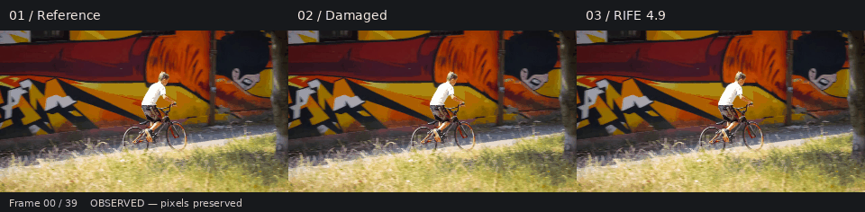
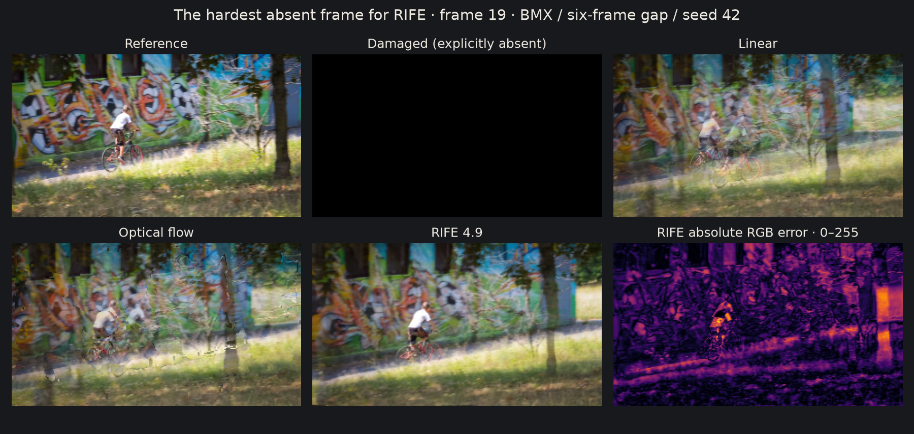
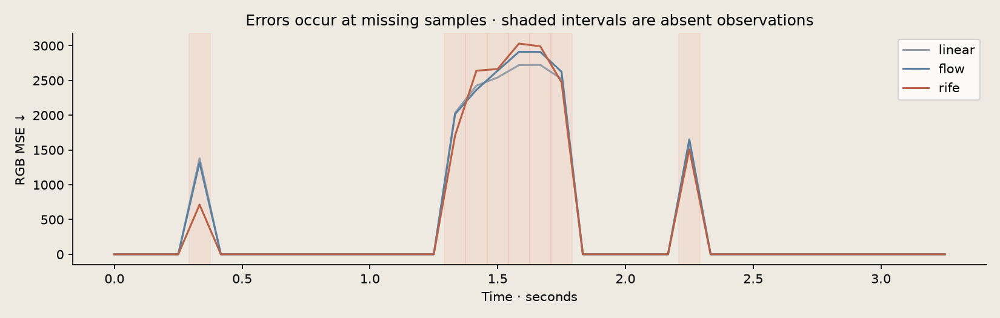

What happened
in the missing time?
A camera misses a moment. An algorithm makes an estimate. This is a guided tour of how we test the difference.


One experiment.
A complete chain of evidence.
Start with an untouched reference. Hide observations deliberately, keep the timestamps, then give every solver the same damaged input. Only the evaluator can see what was removed.
Keep the truth.
Three attributed natural sequences, plus synthetic controls and local uploads.
Make an absence.
A saved seed controls dropped frames, intervals, spatial masks, noise and blur.
Use surviving pixels.
Classical baselines and pretrained RIFE run locally on CPU.
Measure the mistake.
Compare affected pixels, temporal error, runtime, and visible failures.
Why is this an inverse problem?
The measurement y = M B x + n removes or alters information about an unknown video x. Several videos can agree with the surviving observations. A plausible generated frame is therefore a hypothesis, not proof of what happened. This app preserves a reference to test that hypothesis.
Why is a missing frame different from a black frame?
An absent sample has an explicit missing flag. Zero-valued storage placeholders are never used as solver anchors. A genuinely recorded black image remains a valid observation. The damaged-view metric convention penalizes zero placeholders and is disclosed in the reports.
A recovery can look
convincing and wrong.
Drag across the same absent frame to compare the untouched reference and RIFE estimate. This is the highest-error missing frame for RIFE in this specific experiment.
Loading the measured frame index…
Both images show the same normalized timestamp at 320 × 180. The divider changes visibility, not the reconstruction.
Inspect all baselines and the error map
The error map uses mean absolute RGB error on a fixed 0–255 scale. All methods are shown at the same frame. This frame was selected by highest RIFE error, not by best visual appearance.
Good results belong here.
So do regressions.
Change the corruption regime. Each row is the equal-weight mean of nine scene/seed experiments. These are our measured results, not numbers copied from a paper.
Affected PSNR · dB ↑ · bars start at 0 dB, maximum 24 dB. Coral = pretrained neural method. Blue = classical baseline. Higher PSNR means smaller squared RGB error.
What do these scores leave out?
Three scenes are a small study. Repeated seeds are not independent new scenes. Checkpoint training overlap with DAVIS is unknown. PSNR and SSIM do not fully capture perceptual or temporal plausibility. LPIPS/STLPIPS and calibrated uncertainty are not implemented.

Test the upgrade.
Keep the result.
RIFE 4.26 runs on CPU. In our matched experiment, it is faster but loses affected PSNR to 4.9 in 16 of 18 conditions. We keep both the candidate implementation and every result. The deployed default stays 4.9.
| Regime | 4.9 PSNR | 4.26 PSNR | 4.9 / 4.26 sec per absent frame |
|---|
4.9 uses an ensemble export; 4.26 does not. This compares deployable configurations, not a controlled architecture ablation. Warm CPU timing, two ORT threads; hardware-dependent. No retraining, distillation or pruning was performed.
How does this relate to recent research?
BiM-VFI studies nonuniform motion; tracking-based VFI adds trajectory control; PRISM-related AVIS and InverseCrafter use richer generative priors and measurement consistency. We document those ideas and their differences. We have not benchmarked their implementations, and do not claim to beat them. A lossless comparison pack now makes identical-input testing possible.
Read the primary-source comparison →Your own
reconstruction desk.
Run the application
python -m venv .venv .venv/bin/pip install -r backend/requirements-lock.txt npm ci .venv/bin/python scripts/fetch_assets.py .venv/bin/python -m uvicorn backend.app:app --port 8000 # In another terminal: npm run dev -- --port 5173
Python 3.12 · Node 20.19+ · no keys or GPU
Try this route
- Open localhost:5173 and choose Between the trees.
- Choose Interval, save the seed, and create damage.
- Run Linear, Optical flow and RIFE.
- Scrub an absent sample and move the divider.
- Open Evaluation, inspect errors and download the record.
Useful keyboard controls
Space plays; ←/→ step; Home returns to frame 0. Form sliders use their native arrow keys. Open the keyboard icon for help. Viewer shortcuts apply outside form controls.
Why no public demo link?
This project is prepared for a private repository. This guide runs locally without a backend; actual restoration needs the local backend. GitHub Pages cannot execute FastAPI or CPU inference. No hosted service has been deployed.